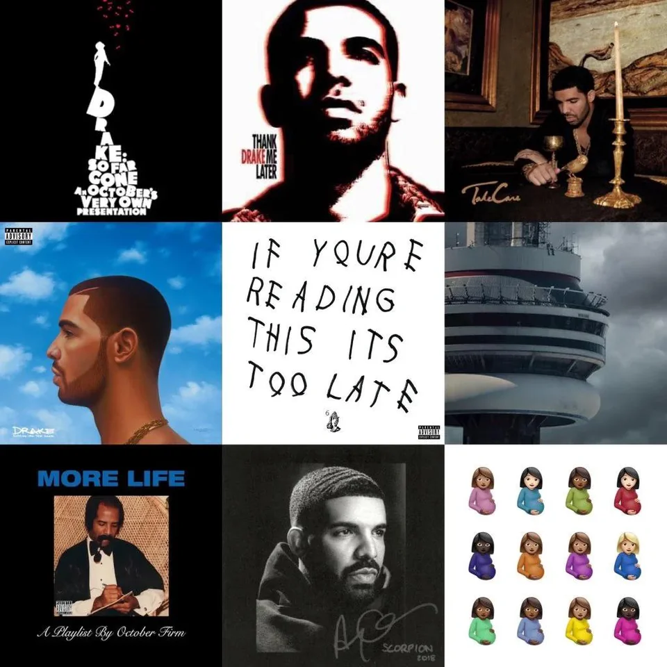

Drake

Reseña corta sobre su música:
Drake es un influyente rapero y cantante de hip-hop conocido por su versatilidad en la música urbana. Sus letras exploran temas de amor, éxito y vida en la ciudad. Ha logrado numerosos éxitos en las listas de éxitos.
Género:
Hip-Hop/R&B
Álbumes más populares:
"Take Care"
"Views"
"Scorpion"
Banda:
Solista